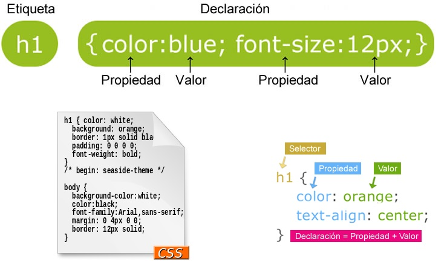

Por sus siglas en Ingles CSS (Cascading Style Sheets) que es un lenguaje de programación muy parecido al HTML el cual nos permite aplicar estilos a los diferentes elementos de los sitios WEB de tal forma que página cuente con la misma apariencia en cuanto a los títulos, los párrafos, las listas etc.
Cada estilo CSS se compone de tres partes: un selector, una propiedad y un valor, y su sintaxis es: selector {propiedad:valor;}
- Selector: Indica a qué etiqueta HTML se aplicará el estilo.
- Propiedad: Indica a qué propiedad de la etiqueta se aplicará el estilo, por ejemplo, al color de fondo, al tamaño de la letra, etc.
- Valor: Valor de la propiedad.